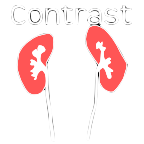

ContrastRx
Premedication Strategy

Acute Reaction
Content summarized from the ACR Manual on Contrast Media v9 (2013)
Content summarized from the ACR Manual on Contrast Media v9 (2013)
Content is provided for educational purposes only, and is provided for use by medical professionals. It is not intended as, nor should it be, a substitute for independent professional medical care.
This application should in no way be seen as a replacement for consultation with colleagues and/or other sources. By using this application, you agree to use the information solely for your own educational purposes.